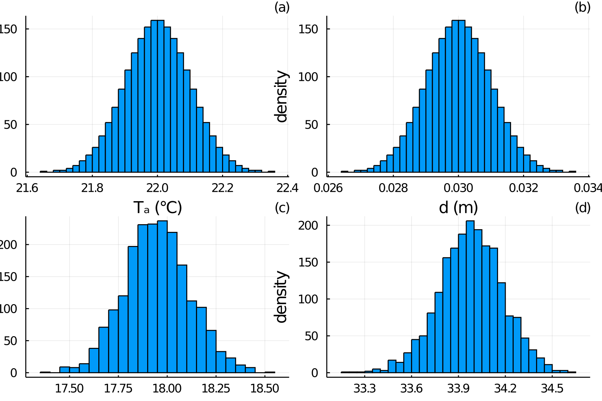
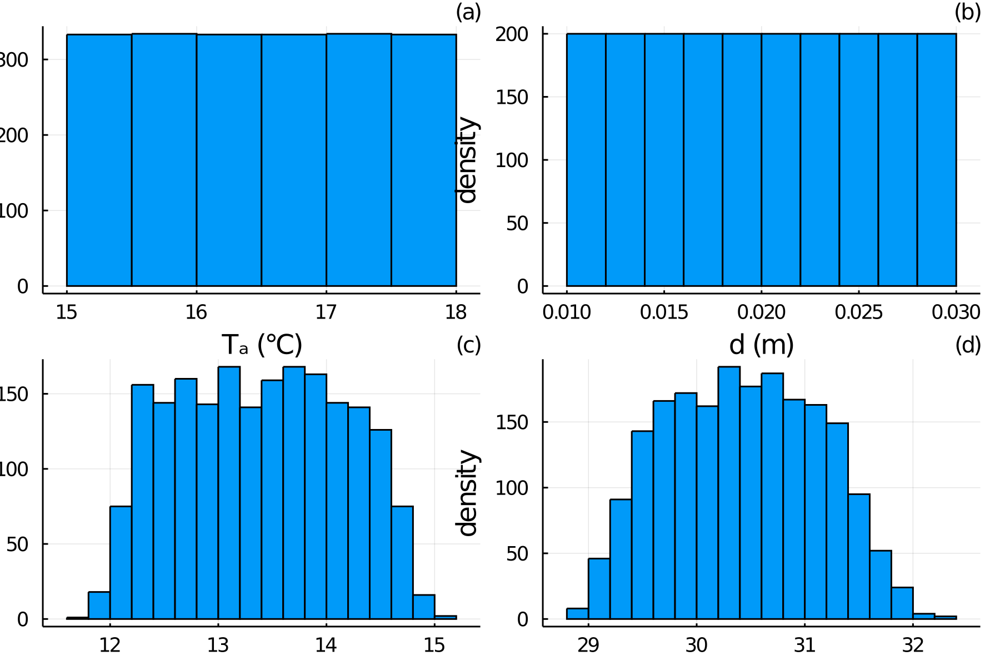

Uncertainty propagation
Monte Carlo uncertainty propagation
Using normal distributions
Thanks to the implementation of PlantBiophysics.jl, it is possible to propagate uncertainties in an easy way. Instead of using classic datatypes as Float64, we use specific datatype implemented in the Julia package MonteCarloMeasurements.jl so we can propagate distributions rather than scalars.
Why using especially Monte Carlo methods ? Here we have a problem that is highly non-linear. Monte Carlo methods fit this type of problem very well, unlike others methods like linear propagation theory. The main idea of Monte Carlo methods is to simulate the problem a large number n of times, randomly drawing inputs in their distributions (specified by user). As outputs, we then have distributions (and means/standard deviations so).
Using the μ ± σ notation, you can create a Gaussian distribution (of mean μ and standard deviation σ).
using PlantBiophysics
using MonteCarloMeasurements
using Plots
unsafe_comparisons(true)
meteo = Atmosphere(T = 22.0 ± 0.1, Wind = 0.8333 ± 0.1, P = 101.325 ± 1., Rh = 0.4490995 ± 0.02, Cₐ = 400. ± 1.)
leaf = LeafModels(energy = Monteith(),
photosynthesis = Fvcb(),
stomatal_conductance = Medlyn(0.03, 12.0),
Rₛ = 13.747 ± 1., skyFraction = 1.0, PPFD = 1500.0 ± 1., d = 0.03 ± 0.001)
results = energy_balance(leaf,meteo)
p1 = plot(meteo.T,legend=:false,xlabel="Tₐ (°C)",ylabel="density",dpi=300,title="(a)",titlefontsize=9)
p2 = plot(leaf.status.d,legend=:false,xlabel="d (m)",ylabel="density",dpi=300,title="(b)",titlefontsize=9)
p3 = plot(results.Tₗ,legend=:false,xlabel="Tₗ (°C)",ylabel="density",dpi=300,title="(c)",titlefontsize=9)
p4 = plot(results.A,legend=:false,xlabel="A",ylabel="density",dpi=300,title="(d)",titlefontsize=9)
plot(p1,p2,p3,p4,dpi=300,titleloc=:right)[ Info: Unsafe comparisons using the function `mean` has been enabled globally. Use `@unsafe` to enable in a local expression only or `unsafe_comparisons(false)` to turn off unsafe comparisons /home/runner/.julia/packages/GR/G9I5v/src/../deps/gr/bin/gksqt: error while loading shared libraries: libQt5Widgets.so.5: cannot open shared object file: No such file or directory connect: Connection refused GKS: can't connect to GKS socket application GKS: Open failed in routine OPEN_WS GKS: GKS not in proper state. GKS must be either in the state WSOP or WSAC in routine ACTIVATE_WS

It is also possible to use other types of distributions. For an uniform distribution, you can use a .. b (so the uniform distribution will be in the interval [a,b]). For others distributions, you can use the package Distributions.jl and implement Binomial, Gamma, etc. distributions with MonteCarloMeasurements.jl as a ⊠ Gamma(1) (i.e. a plus a Gamma distribution of parameter 1) or a ⊠ Exponential(1) (i.e. an Exponential distribution of parameter 1 with a as factor).
using PlantBiophysics
using MonteCarloMeasurements
# ⊠ \boxplus
# ⊠ \boxtimes
meteo = Atmosphere(T = 15.0 .. 18.0, Wind = 0.8333 ± 0.1, P = 101.325 ± 1., Rh = 0.4490995 ± 0.02, Cₐ = 400. ± 1.)
leaf = LeafModels(energy = Monteith(),
photosynthesis = Fvcb(),
stomatal_conductance = Medlyn(0.03, 12.0),
Rₛ = 13.747 ± 1., skyFraction = 1.0, PPFD = 1500.0 ± 1., d = 0.01 .. 0.03)
results = energy_balance(leaf,meteo)
p1 = plot(meteo.T,legend=:false,xlabel="Tₐ (°C)",ylabel="density",dpi=300,title="(a)",titlefontsize=9)
p2 = plot(leaf.status.d,legend=:false,xlabel="d (m)",ylabel="density",dpi=300,title="(b)",titlefontsize=9)
p3 = plot(results.Tₗ,legend=:false,xlabel="Tₗ (°C)",ylabel="density",dpi=300,title="(c)",titlefontsize=9)
p4 = plot(results.A,legend=:false,xlabel="A",ylabel="density",dpi=300,title="(d)",titlefontsize=9)
plot(p1,p2,p3,p4,dpi=300,titleloc=:right)/home/runner/.julia/packages/GR/G9I5v/src/../deps/gr/bin/gksqt: error while loading shared libraries: libQt5Widgets.so.5: cannot open shared object file: No such file or directory connect: Connection refused GKS: can't connect to GKS socket application GKS: Open failed in routine OPEN_WS GKS: GKS not in proper state. GKS must be either in the state WSOP or WSAC in routine ACTIVATE_WS

Plotting
Plotting values of type MonteCarloMeasurements.jl is allowed using plot as it were scalars. It will plot confidence interval too. You can also check specific MonteCarloMeasurements.jl function ribbonplot (more details in part Plotting on its documentation).
Performance
Monte Carlo methods are highly dependent on the number n of simulations done. As a consequence, a result of uncertainty propagation using Monte Carlo methods using a low n is strongly unreliable, and a reliable result (using suficiently high n) takes time. For time-consuming simulations, it would be better not to use uncertainty propagation until now.
For more information, you can visit MonteCarloMeasurements.jl or Distributions.jl documentations.